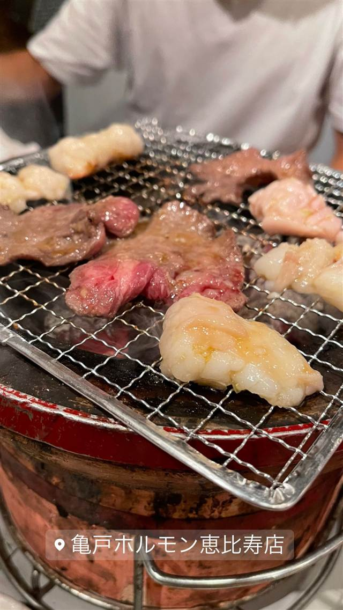

亀戸ホルモン 恵比寿店
亀戸本店は雨でも行列、備長炭で焼く国産ホルモン
亀戸ホルモン恵比寿店
下町・亀戸で行列必至の人気を誇る「亀戸ホルモン」の恵比寿支店。毎朝芝浦市場から仕入れる新鮮な国産ホルモンを備長炭で焼き上げるのが自慢で、食べログ「焼肉東京百名店」にも選出されている。
TRIVIA
豆知識
- 本店のある亀戸では雨の日でも行列ができるほどの人気ぶり
- キャッチコピーは「ホルモンはBLUESだ」
REVIEWS
世間の評判
3.55食べログ
ホルモンの下処理の丁寧さ
- 臭みがなく食べやすいホルモンの下処理の丁寧さを評価する声が多い
- 店員の接客対応や部位の説明が丁寧だと評価する声が多く見られる
- 注文の行き違いで頼んだ料理が来ないという不満の声も複数見られる
食べログ 口コミ1147件
| 系譜 | 下町・亀戸で人気を博した「亀戸ホルモン」が恵比寿に進出した支店 |
|---|---|
| 看板 | ミックスホルモン（塩・味噌だれ）、辛味噌だれのホルモン焼き |
| こだわり | 毎朝、芝浦の食肉市場から仕入れる新鮮な国産ホルモンを備長炭で焼き上げる。味付けは塩・味噌だれ・辛味噌だれから選べる |
| 掲載・評価 | 食べログ「焼肉東京百名店」選出 |
| どこから | 都心 |
| 予算 | 夜 ¥3,000～¥3,999 |
| 予約 | 予約可 |
| 場所 | 恵比寿駅 東京都渋谷区恵比寿南1-14-2 タイムゾーンビル1F |
| メモ | 恵比寿駅から徒歩約5分。運営は株式会社テイクファイブで、東京・神奈川・千葉に複数店舗を展開するチェーン |
食べたもの：ホルモン焼肉
NEARBY
近い店・同じ系統の店
-
 アメリカンダイニング 恵比寿駅
MADISON NEW YORK KITCHEN（マディソン ニューヨーク キッチン）
2014年開業、赤とゴールドの内装で味わう熟成肉のステーキ
夜 ¥5,000～¥5,999
アメリカンダイニング 恵比寿駅
MADISON NEW YORK KITCHEN（マディソン ニューヨーク キッチン）
2014年開業、赤とゴールドの内装で味わう熟成肉のステーキ
夜 ¥5,000～¥5,999
-
 ピザ 恵比寿駅
L'Antica Pizzeria da Michele 恵比寿店
1870年創業のナポリ本店直伝、空輸チーズのマルゲリータ
昼 ¥2,000～¥2,999 夜 ¥4,000～¥4,999
ピザ 恵比寿駅
L'Antica Pizzeria da Michele 恵比寿店
1870年創業のナポリ本店直伝、空輸チーズのマルゲリータ
昼 ¥2,000～¥2,999 夜 ¥4,000～¥4,999
-
 ピザ 恵比寿駅(西口)
pizza marumo（ピッツァ マルモ）
和食出身の店主が薪窯で焼く、24時間発酵の低温生地ピザ
夜 ¥5,000～¥5,999
ピザ 恵比寿駅(西口)
pizza marumo（ピッツァ マルモ）
和食出身の店主が薪窯で焼く、24時間発酵の低温生地ピザ
夜 ¥5,000～¥5,999
-
 パスタ 恵比寿
BANDERUOLA-Cuscusseria-バンデルオーラ
シチリア・トラーパニ郷土料理クスクスを専用の器で蒸す製法を再現する専門店
昼 ¥1,000～¥1,999 夜 ¥6,000～¥7,999
パスタ 恵比寿
BANDERUOLA-Cuscusseria-バンデルオーラ
シチリア・トラーパニ郷土料理クスクスを専用の器で蒸す製法を再現する専門店
昼 ¥1,000～¥1,999 夜 ¥6,000～¥7,999
-
 イタリアン 恵比寿駅
ブラチェリア デリツィオーゾ イタリア（旧店名：デリツィオーゾ イタリア）
炭火焼き「熾火」にこだわる、恵比寿2000年創業のイタリアン
夜 ¥6,000～¥7,999
イタリアン 恵比寿駅
ブラチェリア デリツィオーゾ イタリア（旧店名：デリツィオーゾ イタリア）
炭火焼き「熾火」にこだわる、恵比寿2000年創業のイタリアン
夜 ¥6,000～¥7,999
-
 ピザ 恵比寿(東口)
PICICA PICICA PIZZA & PASTA
KNOCK新業態、飲めるピッツェリアの軽いナポリ風ピザ
昼 ¥1,000～¥1,999 夜 ¥8,000～¥9,999
ピザ 恵比寿(東口)
PICICA PICICA PIZZA & PASTA
KNOCK新業態、飲めるピッツェリアの軽いナポリ風ピザ
昼 ¥1,000～¥1,999 夜 ¥8,000～¥9,999